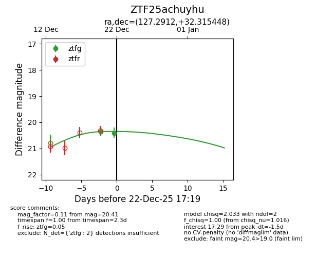
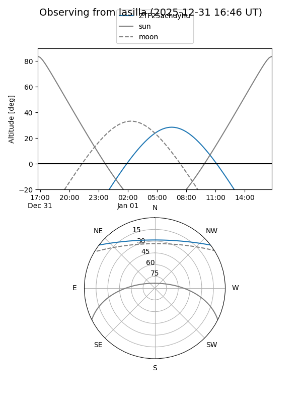
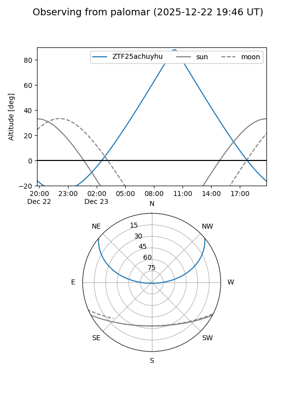
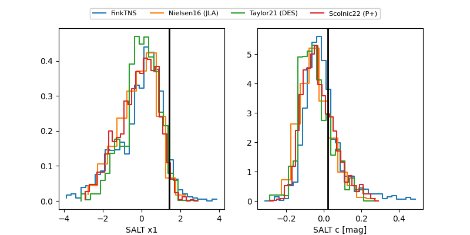

ZTF25achuyhu
Target ZTF25achuyhu at 2025-12-22 14:03
Aliases and brokers:
FINK: fink-portal.org/ZTF25achuyhu
Lasair: lasair-ztf.lsst.ac.uk/objects/ZTF25achuyhu
ALeRCE: alerce.online/object/ZTF25achuyhu
alt names
ZTF25achuyhu (ztf,fink_ztf)
Coordinates:
equatorial (ra, dec) = 127.2912,+32.31545
equatorial (HMS+DMS) = 08:29:09.90,+32:18:55.61
galactic (l, b) = (190.5803,+33.70065)
Flags:
Photometry:
last ztfg=20.35
1 ztfg detections
Lightcurve

Visibility


Additional plots
